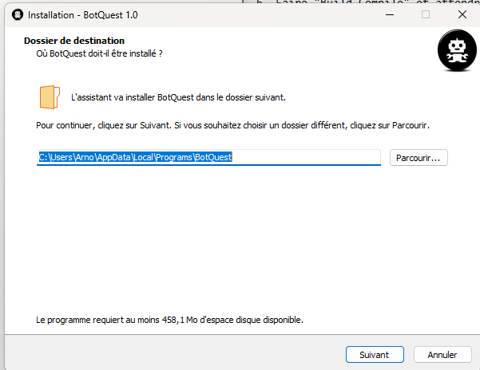
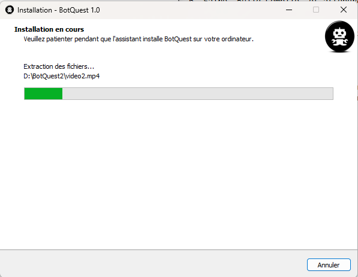
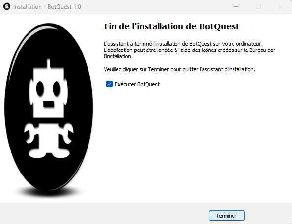

2. Téléchargement



Comme indiqué précédemment, ce cahier des charges porte sur la réalisation d’un jeu vidéo, intitulé Bot Quests. Etant passionnés par les jeux d’énigmes et d’aventures nous avons décidés de faire un mixte de ces deux concepts pour en créer un jeu. L’aventure se déroule sur une île dans une ambiance fantastique, dont l’objectif pour les joueurs est de quitter l’île. Le principe du jeu est donc simple : Résoudre des quêtes tout en survivant aux différentes menaces qui planent sur l’île pour obtenir de multiples objets afin de s’échapper de ce lieu. Bot Quests se jouera à la 3ème personne et sera réalisé en 3D afin d’obtenir un gameplay plus immersif. Les énigmes et les quêtes à accomplir sont inspirées de nombreux jeux tels que Professor Layton (un jeu d’énigmes connu sur Nintendo DS) pour le côté énigme du jeu, nous nous sommes également inspirés de The Forest pour le côté survie de l’aventure. L’ambiance et le design de l’île sont inspirés du jeu Animal Crossing, un jeu de simulation de vie.
Victor M. |
Étant un enfant très curieux je me suis intéressé a beaucoup de chose dont l’informatique. J’ai posé plusieurs question a mon et ce dernier m’a fait découvrir les ordinateurs, les jeux vidéo et surtout la programmation. Cela m’a beaucoup plu et c’est pourquoi j’ai continuer à découvrir ce domaine. Je voyais ça comme un passe temps et au lycée j’ai décider en faire mon métier. J’ai hâte de réaliser ce projet pour découvrir Des domaines comme l'IA. Mais aussi améliorer mes compétences en programmation. De plus, mon rôle de chef de projet me permettra de bien partager les tâches et organiser le projet. Je pourrais aider mes camarades grâce à mon expérience personnelle. |
Victor G. |
Je me suis toujours demandé comment était fait un jeu vidéo, comment était gérés la vie, les trajectoires, les boîtes de collision, tout cela dans un environnement en trois dimensions qui s’adapte même souvent aux agissements du personnage. Grâce à l’enseignement d’EPITA mes questions trouvent une à une des réponses, et je vais maintenant me lancer avec mes camarades dans la conception d’un jeu et me confronter donc moi-même à de toutes nouvelles problématiques, et donc devoir trouver une toute nouvelle méthode de réflexion pour y palier. C’est ce que je trouve le plus excitant dans ce projet : trouver le moyen de faire faire les projets que nous avons en tête par une machine et acquérir une méthode de pensée me permettant de corriger le plus rapidement possible les quelques erreurs restantes que cette même méthode ne m’aura pas permis d’éviter.Je suis aussi très satisfait du groupe que nous avons formé pour ce projet, chacun de ses membres apportant différentes compétences qui ensemble, ne peuvent qu’annoncer un projet prometteur ! |
Arno M. |
Depuis ma plus tendre enfance, je baigne dans les jeux vidéo. J’ai toujours eu un penchant pour l’informatique, car je me renseignais et me renseigne toujours autant sur l’actualité technologique. Dès la seconde, je savais déjà dans quoi je voulais m’engager : des études dans le domaine de l’informatique. Également, je me suis toujours questionné sur la manière dont se réalisait un jeu. Bien évidemment, je savais que la production d’un tel projet serait longue, mais je ne savais pas vraiment à quoi m’attendre. Après la réalisation de ce cahier de charges, je me sens à la fois enthousiaste et terrifié. D’un côté, mon rêve d’enfant se réalise, de l’autre, la difficulté me fait face. Malgré tout, je pense être capable de réaliser ce projet à bien à l’aide d’une bonne détermination et d’un groupe soudé. |
Théophane S. |
D’abord attiré comme beaucoup par les jeux vidéo, je me suis ensuite passionné par l’informatique avec l’infinité de possibilités que ce domaine propose. Ce projet m’enthousiasme particulièrement notamment avec le travail en groupe qui permet de partager et de profiter des connaissances des autres membres du groupe pour progresser et ainsi découvrir de nouveaux domaines tels que dans mon cas la 3D, le fonctionnement des IA, la création de sites web et bien d’autres nouveautés. De plus, la réalisation de ce projet me tient particulièrement à cœur grâce à l’autonomie et l’organisation dont nous devons faire preuve. |